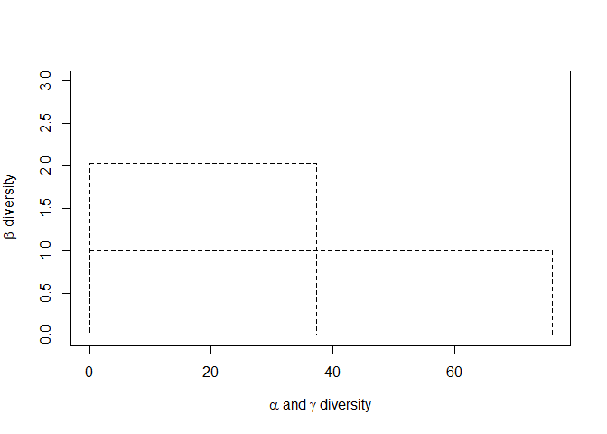
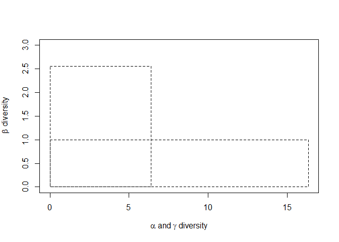

Las observaciones se realizaron en Marzo del 2019 en tres sitios del Pacífico Norte en Costa Rica. El primero fue en el Refugio de Vida Silvestre Mata Redonda, cerca del margen del río Tempisque, en el Golfo de Nicoya, Guanacaste. El segundo sitio fue en las salineras de Cocorocas, perteneciente al distrito de Chomes del cantón central de Puntarenas. El último punto fue en las camaroneras de Chomes. A cada sitio le reconocimos los problemas ambientales presentes en el momento de la visita. Los problemas evaluados fueron Residuos sólidos, Vertido de Hidrocarburos, Residuos sólidos, Aguas residuales y Tala de árboles.
La metodología para describir comportamientos de las aves consitió en observaciones directas y conteos en campo durante 3-4 horas.Tanto las observaciones del Refugio como en las camaroneras de Chomes fueron realizados en horas de la tarde, en las Salineras las observaciones se realizaron tanto en la mañana como una hora en la tarde. A cada especie se le investigó el órden, la familia, el estatus (R= Residente, M= Migratorio, A= Accidental, SC= Especie Sin Comprobante, END= Endémica y RR= Residente reproductor) y el hábito alimenticio.
Por último, se realizó un análisis de Diversidad Verdadera para observar las diferencias en la diversidad alpha, beta y gamma entre los tres sitios. La Diversidad verdadera expresa el número equivalente de especies o número de efecto de especies (Hill numbers). Se transforma las comunidades cuyas especies tienen diferentes abundancias, en comunidades con abundancias iguales. Así podemos comparar número de especies entre comunidades. Este análisis viene a solventar los problemas de duplicación que tienen los índices de diversidad tradicional como Shannon y Simpson (Hoffmann and Hoffmann 2008; Moreno et al. 2011; Lou and González-Oreja 2012).
Figura 1. Paisaje del Humedal dentro del Refugio de Vida Silvestre Mata Redonda, Guanacaste.
| RFS Mata Redonda | 0 | 1 | 2 | 3 | 4 | 5 |
|---|---|---|---|---|---|---|
| Residuos Sólidos | - | x | - | - | - | - |
| Vertido de Hidrocarburos | X | - | - | - | - | - |
| Basura en General | - | x | - | - | - | - |
| Aguas Residuales | x | - | - | - | - | - |
| Tala | x | - | - | - | - | - |
Figura 2. Paisaje de la Salinera de Cocorocas, Chomes.
| Cocorocas | 0 | 1 | 2 | 3 | 4 | 5 |
|---|---|---|---|---|---|---|
| Residuos Sólidos | - | - | X | - | - | - |
| Vertido de Hidrocarburos | X | - | - | - | - | - |
| Basura en General | X | - | - | - | - | - |
| Aguas Residuales | X | - | - | - | - | - |
| Tala | - | X | - | - | - | - |
Figura 3. Paisaje de la Camaronera de Chomes, Puntarenas.
| Chomes | 0 | 1 | 2 | 3 | 4 | 5 |
|---|---|---|---|---|---|---|
| Residuos Sólidos | - | - | X | - | - | - |
| Vertido de Hidrocarburos | X | - | - | - | - | - |
| Basura en General | - | X | - | - | - | - |
| Aguas Residuales | X | - | - | - | - | - |
| Tala | - | X | - | - | - | - |
| Especie | Orden | Familia | Estatus | Alimentacion |
|---|---|---|---|---|
| Columbina inca | Columbiformes | Columbidae | R | Semillas |
| Columbina passerina | Columbiformes | Columbidae | R | Semillas |
| Leptotila verreauxi | Columbiformes | Columbidae | R | Semillas |
| Zenaida asiatica | Columbiformes | Columbidae | R.M | Semillas |
| Crotophaga sulcirostris | Cuculiformes | Cuculidae | R | Insectos |
| Jacana spinosa | Charadriiformes | Jacanidae | R | Insectos |
| Jabiru mycteria | Ciconiiformes | Ciconiidae | R | Anguilas |
| Mycteria americana | Ciconiiformes | Ciconiidae | R.M | Peces |
| Trigisoma mexicanum | Pelecaniformes | Ardeidae | R | Peces |
| Ardea herodias | Pelecaniformes | Ardeidae | M | Peces |
| Ardea alba | Pelecaniformes | Ardeidae | R.M | Peces |
| Bubulcus ibis | Pelecaniformes | Ardeidae | R.M | Insectos |
| Coragyps atratus | Cathartiformes | Cathartidae | R | Frutas |
| Cathartes aura | Cathartiformes | Cathartidae | R.M | carroña |
| Parabuteo unicintus | Accipitriformes | Accipitridae | R.M | Vertebrados |
| Eumomota superciliosa | Coraciiformes | Momotidae | R | Inectos |
| Melanerpes hofmannii | Piciformes | Picidae | R-END | Frutas |
| Caracara cheriway | Falconiformes | Falconidae | R | Vertebrados |
| Herpetotheres cachinnans | Falconiformes | Falconidae | R | Vertebrados |
| Amazona albifrons | Psittaciformes | Psittacidae | R | Semillas |
| Sublegatus arenarum | Oxyruncidae | Onychorhynchidae | R | Insectos |
| Myiarchus crinitus | Passeriformes | Tyrannidae | M | Insectos |
| Tyrannus melancholicus | Passeriformes | Tyrannidae | R | Insectos |
| Calocitta formosa | Passeriformes | Corvidae | R | Insectos |
| Hirundo rustica | Passeriformes | Hirundinidae | M | Vegetación |
| Campylorhynchus rufinucha | Passeriformes | Troglodytidae | R | Insectos |
| Quiscalus mexicanus | Passeriformes | Icteridae | R | Insectos |
| Patagioenas flavirostris | Columbiformes | Columbidae | R | Semillas |
| Himantopus mexicanus | Charadriiformes | Recurvirostridae | R.M | Crustáceos |
| Pluvialis squatarola | Charadriiformes | Charadriidae | M | Crustáceos |
| Charadrius wilsonia | Charadriiformes | Charadriidae | R.M | Crustáceos |
| Charadrius semipalmatus | Charadriiformes | Charadriidae | M | Moluscos |
| Numenius phaeopus | Charadriiformes | Scolopacidae | M | Crustáceos |
| Limosa fedoa | Charadriiformes | Scolopacidae | M | Vegetación |
| Arenaria interpes | Charadriiformes | Scolopacidae | M | Moluscos |
| Calidris minutilla | Charadriiformes | Scolopacidae | M | Moluscos |
| Calidris mauri | Charadriiformes | Scolopacidae | M | Moluscos |
| Limnodromus griseus | Charadriiformes | Scolopacidae | M | Moluscos |
| Actitis macularius | Charadriiformes | Scolopacidae | M | Insectos |
| Tringa semipalmata | Charadriiformes | Scolopacidae | M | Crustáceos |
| Leucophaeus atricilla | Charadriiformes | Laridae | M | Peces |
| Gelochelidon nilotica | Charadriiformes | Laridae | M | Crustáceos |
| Thalasseus maximus | Charadriiformes | Laridae | M | Peces |
| Thalasseus sandvicensis | Charadriiformes | Laridae | M | Peces |
| Rynchops niger | Charadriiformes | Laridae | M | Crustáceos |
| Fregata magnificens | Suliformes | Fregatidae | R | Peces |
| Egretta thula | Pelecaniformes | Ardeidae | R.M | Peces |
| Egretta caerulea | Pelecaniformes | Ardeidae | R.M | Peces |
| Egretta tricolor | Pelecaniformes | Ardeidae | R.M | Peces |
| Butorides virescens | Pelecaniformes | Ardeidae | R.M | Peces |
| Nycticorax nycticorax | Pelecaniformes | Ardeidae | R.M | Vertebrados |
| Eudocimus albus | Pelecaniformes | Threskiornithidae | R | Moluscos |
| Platalea ajaja | Pelecaniformes | Threskiornithidae | R | Insectos |
| Pandion haliaetus | Accipitriformes | Pandionidae | M | Vertebrados |
| Buteogallus anthracinus | Accipitriformes | Accipitridae | R | Reptiles |
| Buteo plagiatus | Accipitriformes | Accipitridae | R | Vertebrados |
| Buteo albonotatus | Accipitriformes | Accipitridae | R.M | Vertebrados |
| Milvago chimachima | Falconiformes | Falconidae | R | Vertebrados |
| Brotogeris jugularis | Psittaciformes | Psittacidae | R | Frutos |
| Eupsittula canicularis | Psittaciformes | Psittacidae | R | Semillas |
| Sublegatus arenarum | Passeriformes | Tyrannidae | R | Insectos |
| Myiarchus panamensis | Passeriformes | Tyrannidae | R | Insectos |
| Pitangus sulphuratus | Passeriformes | Tyrannidae | R | Insectos |
| Myiozetetes similis | Passeriformes | Tyrannidae | R | Semillas |
| Icterus pustulatus | Passeriformes | Icteridae | R | Insectos |
| Setophaga petechia | Passeriformes | Parulidae | R.M | Insectos |
| Saltator coerulescens | Passeriformes | Thraupidae | R | Frutos |
| Limnodromus griseus | Charadriiformes | Scolopacidae | M | Moluscos |
| Tringa flavipes | Charadriiformes | Scolopacidae | M | Insectos |
| Hydroprogne caspia | Charadriiformes | Laridae | M | Peces |
| Phalacrocorax brasilianus | Suliformes | Phalacrocoracidae | R | Peces |
| Ictinia plumbea | Accipitriformes | Accipitridae | RR.M | Reptiles |
| Falco peregrinus | Falconiformes | Falconidae | M | Aves |
| Progne chalybea | Passeriformes | Hirundinidae | R | Insectos |
| Petrochelidon pyrrhonota | Passeriformes | Hirundinidae | M | Insectos |
| Peucaea ruficauda | Passeriformes | Passerellidae | R | Semillas |
| Parkesia noveboracensis | Passeriformes | Parulidae | M | Insectos |
| Setophaga petechia | Passeriformes | Parulidae | R.M | Insectos |
| Pluvialis squatarola | Charadriiformes | Charadriidae | M | Crustáceos |
| Limosa fedoa | Charadriiformes | Scolopacidae | M | Crustáceos |
| Tringa semipalmata | Charadriiformes | Scolopacidae | M | Crustáceos |
| Thalasseus maximus | Charadriiformes | Laridae | M | Peces |
| Rynchops niger | Charadriiformes | Laridae | M | Peces |
| Falco columbarius | Falconiformes | Falconidae | M | Aves |
| Tyrannus forficatus | Passeriformes | Tyrannidae | M | Insectos |
La Diversidad verdadera expresa el número equivalente de especies o número de efecto de especies (Hill numbers). Se transforma las comunidades cuyas especies tienen diferntes abundancias, en comunidades con abundancias iguales. Así podemos comparar número de especies entre comunidades.
Se observaron 76 especies diferentes en todo el paisaje que consistía en tres comunidades de aves: Chomes, Cocorocas y Mata Redonda. En cuanto a la abundancia de individuos, Cocorocas fue el sitio que tuvo más con 1762, seguido por Chomes y Mata Redonda. La cobertura del muestreo fue parecida entre los sitios (Figura 4).
## Meta-community (class 'MetaCommunity') made of 2546 individuals in 3
## communities and 76 species.
##
## Its sample coverage is 0.99332810483025
##
## Community weights are:
## Chomes Cocorocas Mata_redonda
## 0.3333333 0.3333333 0.3333333
## Community sample numbers of individuals are:
## Chomes Cocorocas Mata_redonda
## 401 1762 383
## Community sample coverages are:
## Chomes Cocorocas Mata_redonda
## 0.9701369 0.9875187 0.9687229
Figura 4. Gráfico de barras con el número de aves por sitio.
En este estudio se observaron 52 especies en Cocorocas, 34 especies en Chomes y en Mata Redonda 26. La diversidad Beta, el número efectivo de comunidades para este paisaje fue de 2.03, es decir que hay 2 comunidades bien establecidas en el paisaje (Figura 5).
## HCDT diversity partitioning of order 0 of metaCommunity MC
## with correction: None
## Alpha diversity of communities:
## Chomes Cocorocas Mata_redonda
## 34 52 26
## Total alpha diversity of the communities:
## [1] 37.33333
## Beta diversity of the communities:
## None
## 2.035714
## Gamma diversity of the metacommunity:
## None
## 76
Figura 5. El rectángulo largo de peso 1 representa la cantidad de especies a nivel de paisaje, igual a 76 especies. El rectángulo estrecho y alto tienen la misma área, el tamaño horizontal muestra la diversidad puntual (37 especies) y el tamaño vertical muestra las comunidades efectivas (2.03).
El q = 1 mide la diversidad , y es equivalente al exponencial del índice de Shannon. Con este índice puedo saber el número de especies comunes en la comunidad. Se concentra en la diversidad local.
## HCDT diversity partitioning of order 1 of metaCommunity MC
## with correction: None
## Alpha diversity of communities:
## Chomes Cocorocas Mata_redonda
## 12.715533 16.162539 6.218247
## Total alpha diversity of the communities:
## [1] 10.85186
## Beta diversity of the communities:
## None
## 2.344227
## Gamma diversity of the metacommunity:
## None
## 25.43921Podemos observar que Cocorocas tiene una comunidad con más especies comunes (16) que el resto de lugares evaluados (Figura 6).
Figura 6. El rectángulo largo de peso 1 representa la cantidad de especies comunes a a nivel de paisaje, igual a 25 especies. El tamaño horizontal muestra la cantidad de especies comunes a nivel local (11 especies) y el tamaño vertical muestra las comunidades efectivas (2.34).
El q = 2 mide la dominancia de las especies y es equivalente al Inverso de Simpson. Con este índice puedo saber cuál es el número de especies dominantes en cada comunidad.
## HCDT diversity partitioning of order 2 of metaCommunity MC
## with correction: None
## Alpha diversity of communities:
## Chomes Cocorocas Mata_redonda
## 7.945106 12.371367 3.808818
## Total alpha diversity of the communities:
## [1] 6.393261
## Beta diversity of the communities:
## None
## 2.556443
## Gamma diversity of the metacommunity:
## None
## 16.344En la comunidad de aves Cocorocas hay 12 especies dominantes, es decir que hay más individuos en estas que en las otras especies. A nivel de paisaje, existen 16 especies consideradas como dominantes (Figura 7).

Figura 7. El rectángulo largo de peso 1 representa la cantidad de especies dominantes a a nivel de paisaje, igual a 16. El tamaño horizontal muestra la cantidad de especies dominantes a nivel local (6.4) y el tamaño vertical muestra las comunidades efectivas (2.55).
Estos perfiles permiten ver el comportamiento de la diversidad en los diferentes Ordenes. Recordar que el Orden 0 (q= 0) es la riqueza de especies, el Orden 1 (q= 1) son las especies comunes y el orden 2 (q= 2) son las especies dominantes (Figura 8).
Figura 8.Perfiles de diversidad del Paisaje de Punta Morales.
El índice de diversidad alfa es definida como la diversidad local. En el Orden 0, es decir la riqueza de especies total en el paisaje es 34 especies. El Orden 1 corresponde al total de especies comunes en cada sitio con el supuesto que la cobertura de muestreo fuera la misma (10.85). Por último, el orden 2 es el total de especies dominantes como si la cobertura de muestreo fuera la misma (6.40) (Figura 8 superior izquierda).
También se presenta la diversidad alfa desglosada por comunidades. Así podemos observar que la comunidad de Cocorocas (linea roja) es el que tiene mayor riqueza de especies (52), especies comunes (16) y especies dominantes (12); esto comparado con Chomes (linea negra) y Mata Redonda (línea verde) (Figura 8 arriba derecha).
La diversidad beta es el reemplazo espacial o temporal de las especies. En este paisaje hay de 2 a 2.5 comunidades diferentes (Figura 8 abajo izquierda) (Marcon et al. 2012).
El índice de diversidad gamma dice la diversidad total a nivel de paisaje. En el orden 0 se muestra el total de especies en todo el paisaje (76). En el orden 1 se muestra que hay 25 especies a nivel de paisaje que son comunes. Por último el orden 3 muestra que el paisaje tiene 16.34 especies dominantes (Figura 8 abajo derecha).
El objetivo de la práctica fue observar los hábitats disponibles para aves acuáticas y terrestres en tres sitios del Pacífico Norte de Costa Rica. Cocorocas fue el lugar donde se contabilizó mayor cantidad de especies comunes y dominantes. Lo que pudo darse gracias a que en este sitio el esfuerzo de muestreo fue mayor que en los otros, ya que se pasó mayor tiempo que en Mata Redonda y en las camaroneras. Además en dicho lugar se realizaron observaciones tanto en la mañana como en la tarde, por lo que se cubrió dos horarios pico de avistamiento. Las salineras tienen dos tipos de hábitat diferentes: espejos de agua en las salinas y playa. Esto ofrece recursos diferenciados de alimento y zonas de descanso que las aves pueden utilizar en diferentes momentos del día. Estas características del sitio pudieron facilitar la dominancia de especies como Himantopus mexicanus y Charadrius wilosnia,que están entre las 12 especies dominantes en Cocorocas. Estas especies utilizan los diques de tierra a lo largo de las salinas como sitios de anidamiento (Skutch and Stiles 2007). Ambas especies son residentes, por lo que la importancia de estos sitios de anidamiento es alta para la preservación de estas aves, ya que suelen anidar en colonias dispersas como mecanismo de defensa de depredadores.
Aunque en Mata Redonda no se observaron tantas especies e individuos como en las salinas de Cocorocas o en las camaroneras de Chomes, aves como el galán sin ventura ( Jabiru mycteria) muestran la significancia que tiene este humedal como hábitat de las aves acuáticas. Esto se puede deber a que este Refugio de Vida Silvestre forma parte de una unidad biogeográfica que comprende el Parque Nacional Palo Verde, Humedal Corral de Piedra, los Humedales Las Delicias, La Bolsa y Humedal la Jacinta, por lo que la cercanía de todos estos humedales le asegura al Jabirú alimento y poco gasto energético de traslado (Ramos 2012). El J. mycteria está catalogado como preocupación menor según la UICN (Birdlife International 2008), pero en Costa Rica la población oscila entre los 25 y 83 individuos, lo que es alarmante debido a la baja abundancia y las presiones sufridas por la pérdida de hábitat y cacería (Villarreal 2009). Esto convierte al Refugio de Vida Silvestre Mata Redonda en un sitio importante para la conservación de esta especie y las que lo utilizan como descanso y ruta de migración. La baja abundancia de aves en esa zona pudo deberse a la desaparición natural del humedal, lo que las obliga a desplazarse a otros sitios de la zona en busca de alimento (Pérez-Castillo et al. 2013).
El hecho de que Cocorocas tuviera la mayor diversidad alfa demuestra que no sólo las áreas protegidas funcionan para conservar la vida silvestre. Este lugar fue el que presentó mayor presión antropogénica, por el mantenimiento de la salina y extracción del producto semanalmente. A pesar de ello, el espejo de agua que ofrece este sitio para descanso y forrajeo es un recurso más que las aves pueden aprovechar, en un mosaico de paisaje donde hay una pérdida de hábitat gracias a procesos de urbanización y cambios de uso del suelo. La inversión para mantener este tipo de actividades donde ofrecen indirectamente servicios ecosistémicos a las aves, puede ser una estrategia interesante para la conservación de aves migratorias y residentes, ayudando a su vez al desarrollo de una actividad económica que ayudaría a los vecinos de las comunidades aledañas.
El índice de diversidad Beta muestra que solamente hay dos comunidades bien establecidas en todo el paisaje, y que la diversidad está representada con 36 especies. Lo anterior pudo darse gracias a que los tres lugares compartían especies entre sí, aunque no en la misma abundancia de individuos. Esto demuestra que hay un reemplazo espacial o temporal de especies, que migran de un sitio a otro influenciado por la disponibilidad del espejo de agua, alimento y horarios de actividad. Fenómenos que son controlados por la subida de la marea (Torres et al. 2006).
Las aves acuáticas son residentes comunes de los humedales y espejos de agua estacionales durante determinados meses del año para cubrir necesidades específicas en sus ciclos tales como alimentación, migración, reproducción o sitios de anidamiento (Blanco and Malvárez 1999). Lugares sin ningún tipo de acción de conservación sirven de hábitat aves migratorias y residentes. Sin embargo es importante tener también zonas protegidas que aseguren los recursos necesarios para que las aves puedan utilizarlo y no decaigan sus poblaciones. La presencia de especies residente y migratorias en los tres sitios estudiados muestra la importancia de la costa del Pacífico central y norte de nuestro país como hábitat para las aves, y se vuelve vital el promover la conectividad de estos lugares para la conservación de la avifauna silvestre.
Birdlife International (2008) Jabiru mycteria, The IUCN Red List of Threatened Species. 8235:
Blanco D, Malvárez A (1999) Los humedales como hábitat de aves acuáticas. … Sobre Humedales Subtropicales Y Templados … 2142:
Hoffmann S, Hoffmann A (2008) Is there a “true” diversity? Ecological Economics 65:213–215. doi: 10.1016/j.ecolecon.2008.01.009
Lou J, González-Oreja JA (2012) Midiendo la diversidad biológica: más allá del índice de Shannon. Acta Zoologica Lilloana 56:3–14
Marcon E, Hérault B, Baraloto C, Lang G (2012) The decomposition of Shannon’s entropy and a confidence interval for beta diversity. Oikos 121:516–522. doi: 10.1111/j.1600-0706.2011.19267.x
Moreno CE, Barragán F, Pineda E, Pavón NP (2011) Reanalyzing alpha diversity: alternatives to understand and compare information about ecological communities. Revista Mexicana de Biodiversidad 82:1249–1261. doi: 10.1017/CBO9781107415324.004
Pérez-Castillo G, Barboza R, Ramos F (2013) Calidad Del Agua Del Refugio Mata Redonda Y Los. 24:379–392
Ramos JF (2012) Evaluación de la influencia de la actividad arrocera sobre la calidad del agua que drena hacia el refugio nacional de vida silvestre mata redonda, nicoya, guanacaste, costa rica. 94
Skutch A, Stiles G (2007) Guía de Aves de Costa Rica, 4th edn. Editoral INBio
Torres M, Quinteros Z, Takano F (2006) Variación temporal de la abundancia y diversidad de aves limícolas en el refugio de vida silvestre Pantanos de Villa, Perú TT - Temporal variation in the abundance and diversity of shorebirds at the Pantanos de Villa Wildlife Refuge, Lima, Peru. Ecología Aplicada 5:119–125
Villarreal J (2009) en Costa Rica : población y conservación. 22:121–128. doi: 10.1590/S0103-863X2012000100008